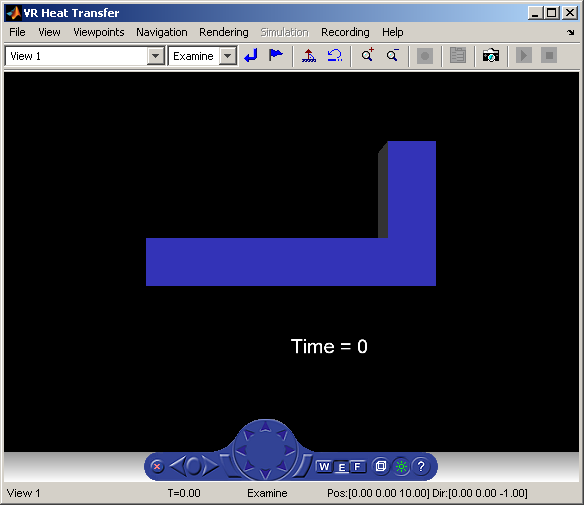
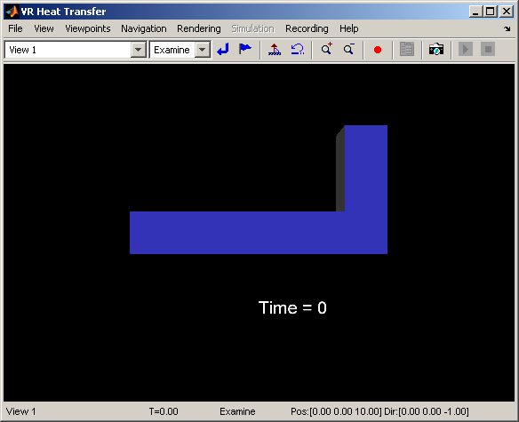

Heat Transfer Visualization with 2D Animation
This demonstration illustrates the use of Simulink® 3D Animation™ MATLAB® interface to create 2D off-line animation files.
The off-line animation recording mechanism is controlled by setting the appropriate vrworld and vrfigure object properties. The recommended way to record animations is by using the Simulink 3D Animation viewer GUI. Direct control of the recording is also possible.
In this example we use the heat distribution data used in the VRHEAT example to create an animation file which can be easily distributed and independentely viewed by others. For this kind of visualization, where static geometry represented by VRML IndexedFaceSet is coloured based on the simulation of some physical phenomenon, it is suitable to create 2D - AVI animation files. 2D animation is recorded exactly as you see it in the viewer figure, using the AVIFILE function.
There are several methods you can use to record animations. In this case, we use the scheduled recording. When scheduled recording is active, a time frame is recorded into the animation file with each setting the virtual world Time property. Recording is completed when you set the scene time at the end or outsite of the pre-defined recording interval.
When using the Simulink 3D Animation MATLAB interface, it is up to the user to set the scene times to the desired times, usually from the point of view of the simulated phenomenon equidistant. This is the most important difference compared to recording the animations for virtual worlds that are associated with Simulink® models, where scene time corresponds directly to the Simulink time.
Please note that the scene time can represent any independent quantity, along which you want to animate the computed solution.
Contents
Load the Precalculated Data
load('vrheat.mat');
Reshaping the Object for VRML
The geometry of the L-shaped block is stored in the 'lblock' structure. For visualization purposes, the block is subdivided into triangular facets. Surface facet vertex coordinates are stored in the 'lblock.mesh.p' field and triangle edges are described by indices into the vertex array.
vert = lblock.mesh.p';
A set of facets in VRML is defined as a single vector of vertex indices where facets are separated by -1, so we need to transform the vertex array appropriately. Indices in VRML are zero-based, so 1 is deducted from all index values stored originally in the 1-based index array 'lblock.mesh.e'.
facets = lblock.mesh.e(1:3,:)-1; facets(4,:) = -1; f = facets; f = f(:); facets = facets';
Prepare the Colormap
Now we'll prepare a colormap that represents various levels of temperature. The MATLAB built-in 'jet' colormap is designed for these purposes.
cmap = jet(192);
Apply the Colormap
The 'lblock.sol.u' field contains a matrix describing the temperatures of vertices as time passes. We have 41 precalculated phases (1 is initial) for 262 vertices. We need to scale the temperature values so that they map into the colormap.
u = lblock.sol.u; ucolor = (u-repmat(min(u),size(u,1),1)) .* (size(cmap,1)-1); urange = max(u) - min(u); urange(urange == 0) = 1; ucolor = round(ucolor./repmat(urange,size(u,1),1));
We will calculate the first animation frame so we have something to begin with.
uslice=ucolor(:,1); colind=zeros(size(facets)); colind(:,1:3)=uslice(facets(:,1:3)+1); colind(:,4)=-1; ci = colind'; ci = ci(:);
The data is ready so we can load the world.
world = vrworld('vrheat.wrl');
open(world);
Now we'll prepare the L-shaped block. The VRML world we have loaded contains a basic cubic form that we can reshape to anything we want by setting its 'point' and 'coordIndex' fields, which represent the vertex coordinates and indices to the vertex array. We will also set the colors by setting the 'color' and 'colorIndex' fields.
We first set the colors, the color indices, the vertices and then the vertex indices. The order is not mandatory but is generally better because this way we are sure there is no temporary state where we have more vertices than colors, or more indices than values, which would cause some vertices to have undefined color or some indices referring to nonexisting (yet) values.
world.IFS_Colormap.color = cmap; world.IFS.colorIndex = ci; world.IFS_Coords.point = vert; world.IFS.coordIndex = f;
Working with VRML Text Objects
The textual comment can also be set to something sensible.
world.TEXT.string = {'Time = 0'};
Open Virtual Reality Viewer
fig = vrfigure(world);
Recording 2D Off-Line Animations using the MATLAB® Interface
We have the handles to the virtual world and the internal viewer figure objects saved in the variables 'world' and 'fig'. Now we set the virtual world and figure properties related to the recording. We want to activate scheduled 2D recording into the file vrheat_anim.avi during the scene time interval (0,4) that corresponds to the pre-computed heat distribution time.
set(world, 'RecordInterval', [0 4]); set(fig, 'Record2DFileName', 'vrheat_anim.avi'); set(fig, 'Record2D', 'on'); set(fig, 'Record2DCompressQuality', 100); set(fig, 'NavPanel', 'none'); vrdrawnow; % Setting the 'RecordMode' property protected by try-catch as this triggers % recording mechanism that is not allowed in the Demonstration version. try set(world, 'RecordMode', 'scheduled'); set_OK = true; catch ME set_OK = false; disp('Setting the ''RecordMode'' property failed.'); disp('Most probable reason is that you are running in the Simulink 3D Animation Demonstration mode'); disp('that doesn''t allow animation recording. The animation file will NOT be created.'); end
Animate the Scene
Now we can start the animation, and you can watch it in the viewer. Please compose both the MATLAB command window and the Simulink 3D Animation viewer figure so that they are both fully visible, and adjust the figure size to the required resolution of the resulting 2D animation file. 2D animation is recorded exactly as you see it in the viewer figure, using the AVIFILE function.
When scheduled recording is active, a time frame is recorded into the animation file setting the virtual world's 'Time' property. It is up to the user to set the scene time to the desired times, usually from the point of view of the simulated phenomenon equidistant. Please note that the scene time can represent any independent quantity, along which you want to animate the computed solution.
for i = 1:size(u,2) pause(0.01); uslice = ucolor(:,i); colind = zeros(size(facets)); colind(:,1:3) = uslice(facets(:,1:3)+1); colind(:,4) = -1; ci=colind'; ci=ci(:); world.IFS.colorIndex = ci; world.TEXT.string = {sprintf('Time = %g', lblock.sol.tlist(i))}; set(world,'Time', lblock.sol.tlist(i)); vrdrawnow; end
AVI File Created in Working Directory
As the animation stops, the file vrheat_anim.avi is created in your working directory. Now we can close and delete the virtual world.
Now the 2D off-line animation file has been created in your working directory. If your system has an AVI player, you can use it to replay the animation file.
if set_OK, disp('The file vrheat_anim.avi is created in your working directory.'); disp('You can play this file using an AVI player.'); end
The file vrheat_anim.avi is created in your working directory. You can play this file using an AVI player.
Preserve the Virtual World Object in the MATLAB Workspace
After you are done with a VRWORLD object, it is necessary to close and delete it. This is accomplished by using the CLOSE and DELETE commands.
close(world); delete(world);
However, we will not do it here. Instead, we leave the world open so that you can play with it further. We will clear only the used global variables.
clear ans ci cm cmap colind f facets i lblock nh set_OK; clear u ucolor urange uslice v vert;